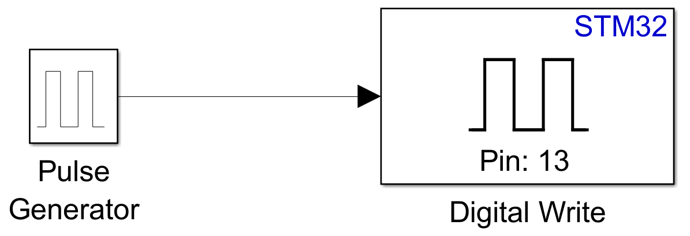
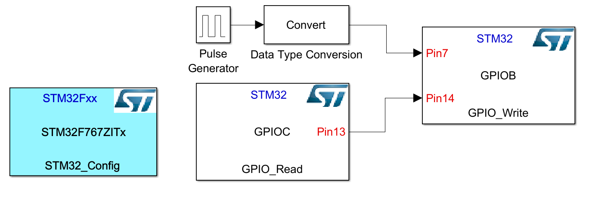
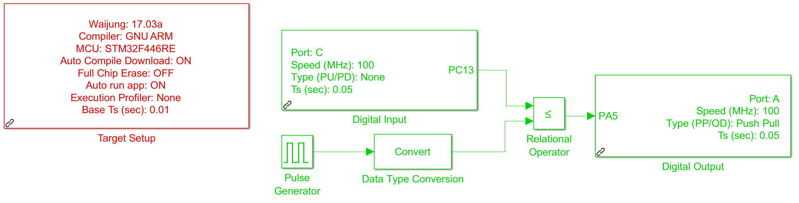
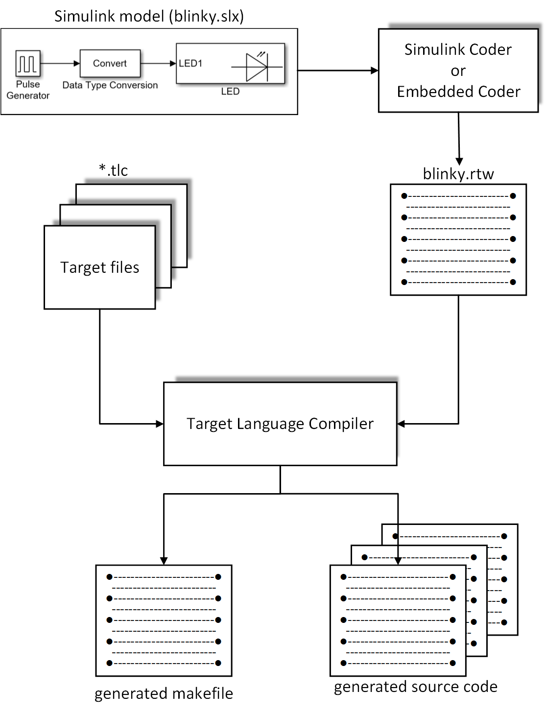
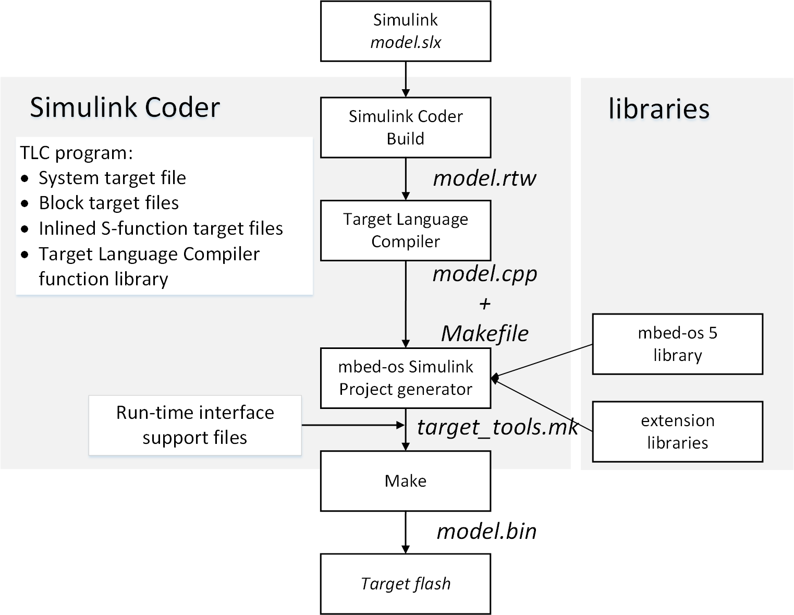
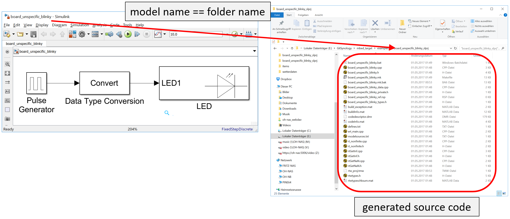
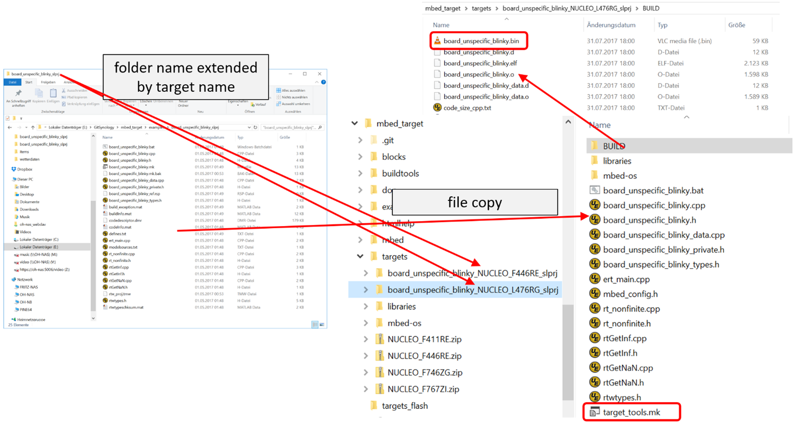
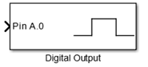
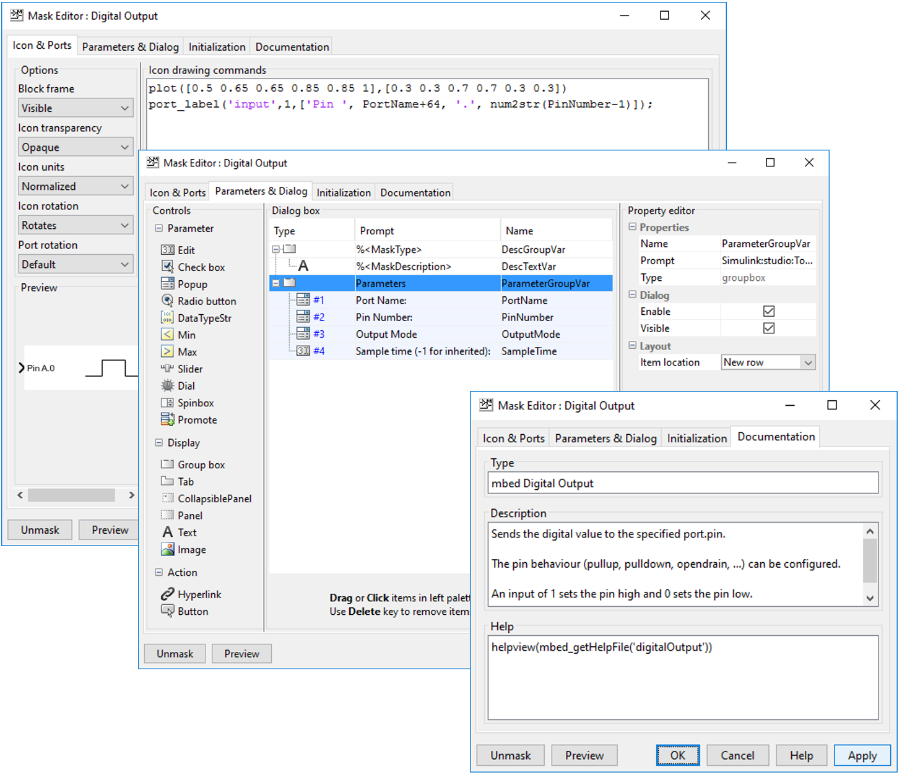
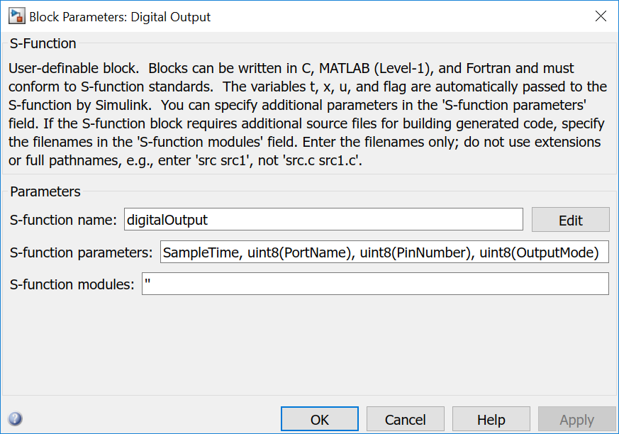

Simulink and Embedded Coder generates and executes C and C++ from Simulink diagrams, Stateflow charts and MATLAB functions. With MbedTarget the generated code is built on top of MbedOS and executed as a real time application on Mbed compatible microcontroller boards. MbedTarget is an addition to Simulink and Embedded coder. It needs MATLAB versions 2016b. Newer versions may work but are not fully tested.
1.1. MATLAB/Simulink targets for Cortex-M controller
Beside MbedTarget other, similar targets exists:
Embedded Coder Support Package for STMicroelectronics Discovery Boards (Version 2016b)
Simulink Coder Support Package for STMicroelectronics Nucleo Boards (Version 2016b)
https://de.mathworks.com/help/supportpkg/nucleo/index.html?s_tid=srchtitle
STM32-MAT/TARGET (Version 4.4.1 and STM32CubeMX 4.22)
http://www.st.com/en/development-tools/stm32-mat-target.html
Waijung Blockset (Version 17_03a)
All targets implementing necessary information to use Simulink and Embedded Coder with mostly STM32 microcontroller. Each target has its advantage and disadvantage:
- Support Package for STMicroelectronics Boards
- Partial based on the old, no longer supported standard peripheral library, partly based on Mbed&STM32Cube libraries
- Integrated gcc support
- F4Discovery:
- Included blocks: ADC, GPIO, Audio out/in, Interrupt Handler
- All pins are usable
- other boards:
- Included blocks: ADC, GPIO, SPI, I2C, PWM, Audio out/in
- Pins restricted to Arduino pins
- Only one Discovery board and a few Nucleo boards are supported

- running a model is a single step process: generating code in Simulink incorporates compiling, linking and flashing
- Simple model:
- STM32-MAT/TARGET

- STM32CubeMX is integrated – each supported STM32 MCU can be used
- all IDEs/compiler supported by STM32CubeMX: EWARM, Keil MDK V4 and V5, TrueSTUDIO, SW4STM32 and Makefile (GCC)
- included blocks: ADC, DAC, GPIO, CAN, I2C, SPI, UART, (High Res)Timers, Watchdog
- a deep support of the hardware block functionality
- running a model is a twostep process: generating code in Simulink and afterwards compiling/linking the code in an IDE
- Simple model:
- Waijung Blockset

- Support STM32F0, STM32F4 and NRF51422/822
- Supports EWARM, Keil MDK, Makefile (GCC)
- Commercial product
- included blocks (STM32F4): ADC, DAC, GPIO, CAN, I2C, SPI, UART, SDIO, TIMER, CRC, DCMI, FLASH, FSMC, RCC, RESET, RTC and additional blocks for several Waijung hardware extensions
- a deep support of the hardware block functionality
- Simple model:
{kind=link}
{kind=link}
{kind=link}
The main disadvantage of all targets: They are closed source. Own extensions are difficult to realize or even not possible. The supported MCUs depends on the manufacturer, mainly STM32 products are supported.
Mathworks offers some more targets like NXP KL25Z and K64F, Infineon XMC and BBC micro:bit. Although the selection of Cortex-M controllers is huge, the selection of targets is quite restricted.
MbedTarget is completely open from both sides: MATLAB code, templates, configurations etc. as well as the MCU libraries. It is based on MbedOS 5, therefore theoretical all MbedOS 5 compatible microcontroller boards can be used to run Simulink models. It must be said theoretically, since (i) it is tested mostly with STM32 based boards and (ii) it is supporting the port pin naming scheme as used by STM (PA_0, PB_12, …). Wiznet, Realtek and Nuvoton are using the same scheme, MCUs of other vendors use a different scheme. A universal pin naming scheme is planned for the near future.
Because of the Mbed library, the support of the controller hardware is much more general. Mbed offers a generalised view of the controller hardware blocks, please see the documentation there (https://mbed.com)
1.2. Principle of MATLAB/Simulink code generation
The principle workflow when processing a Simulink model to an executable binary is shown in the following figure.
{kind=link}
Simulink or Embedded Coder are generating an rtw file from the model. That is a specific textual representation of the model. Together with tlc files which are part of MATLAB and of the specific Simulink target, the target language compiler generates several c/cpp/h files and a Makefile. The following steps depends on the specific target.
The standard way to use a Simulink target is the model configuration. Under Code Generation a System target file can be chosen. But other ways exist.
1.3. Code generation in MbedTarget
MbedTarget uses the standard way based on selecting a tlc file: mbed.tlc is the option that has to be chosen for the Embedded Coder. A Simulink Coder based System target file is in preparation. The following figure depicts some more MbedTarget specific details of the above depicted procedure:
{kind=link}
The target language compiler offers several hooks to customise the code generation process. Mainly two hooks are used: before calling make and after calling make. The whole procedure can be described with the following steps:
- The TLC uses the current MATLAB working path. All generated files are stored in a folder with a name constructed by the Simulink model name and slprj, e.g. blinky_slprj. During this process MATLAB/Simulink tlc files where used for each standard Simulink block. For all Simulink blocks from the MbedTarget Simulink library one tlc file exits. They can be found under mbed_targetblocksmextlc_c. Beside the c/cpp/h files also a makefile is created based on the template makefile mbed.tmf. This makefile needs an additional include file, generated within the next step.
- During the hook call before calling make a target specific folder is created under mbed_taget/targets, e.g. blinky_NUCLEO_F767ZI_slprj. The name is constructed by Simulink model name, target name and slprj. Into this folder all generated files are copied from the original folder under the current MATLAB working path. During the hook an MbedOS 5 specific include file is generated by the Mbed offline tools with the following call:
python ..\mbed-os\tools\project.py -m target -i simulink --source . --source ..\mbed-os --source ..\librariesThis include file is very similar to a standard gcc makefile generated by the gcc_arm exporter, but is adapted to the needs of the Simulink build process. This Simulink exporter is not part of the official MbedOS library but can be incorporated into it by applying a patch.
- After the hook before calling make make.exe is called and a bin file is created.
- During the hook after calling make depending on the chosen flash method, the bin file is flash to the target MCU. The standard Mbed flash method just copies the bin to the target USB drive.
The following figures depict this process. The Simulink model board_unspecific_blinky is built by pressing the Build Model button. MATLAB creates a folder board_unspecific_blinky_slprj in the current working path. In this folder all generated files are stored. When this is finished, the first hook is called by MATLAB.
{kind=link}
During this call a new target specific folder is created under mbed_target/target. The original folder name is extended by the target name, e.g. board_unspecific_blinky_NUCLEO_F446RE_slprj and board_unspecific_blinky_NUCLEO_L476RGslprj for the above model and two different targets NUCLEO_F446RE and NUCLEO_L476RG. All generated files are copied to this folder and a make include file is generated by the Mbed offline tools (target_tools.mk). The first used hook method ends here.
{kind=link}
MATLAB calls make.exe itself. Makefile and make file include (target_tools.mk) can be found under BUILD. Target-specific object files are created into this folder, MbedOS and libraries object files lies in the folder with the same name. This structure is defined by MbedOS export system. The final bin file, e.g. board_unspecific_blinky.bin can be found under BUILD.
During the second hook, this file is flashed to the target board. When it is an Mbed compatible board, it has a mass storage programming method. That means the bin file can be copied to its USB drive. Other programming methods exits as batch files under mbed_target/targets_flash. The method can be chosen under the Mbed specific options under Code Generation in the model configuration.
1.4. MbedTarget Simulink block usage
This chapter describes shortly the components of an MbedTarget Simulink block. The Digital Output block is one of the simplest blocks:
With a double click a configuration dialog opens:

The block has 4 parameters:
- Port Name and Pin Number to choose a GPIO, e.g. PA0
- Output Mode for pull up, pull down, open drain, … - options corresponds to Mbed options of the DigitalInOut class.
- Sample time defines the time period, the GPIO is written. A -1 inherits from the block which writes a value to this one. When every block uses a -1 the global value is chosen, i.e. default value of 1ms. This value can be configured in the model configuration under Solver. A positive value >0 defines the time period for this block. The value has to be multiple of the global step size.
These two parts are everything which is necessary to create Simulink models.
1.5. MbedTarget Simulink block creation
To implement custom Simulink blocks, 4 elements are necessary in the minimum:
- Block with mask
- and parameter - both are part of the target Simulink library
- S-function - C functions
- TLC file - mixture of target language code and C7C++ code
- Block mask
The following figure shows three register cards of the mask editor:
The first defines the outlook of the block as shown in the model editor. Normal MATLAB function can be used within the editor textfield to plot and/or write graphics and text or write input and output labels.
The second card defines the input fields available in the Block Parameters dialog.
The last card defines the block title, a short help text and a command that is called when the help menu item in the context menu of the block is chosen.
{kind=link}
- Block parameter
The following figure depicts the Block Parameter (S-Function) dialog:
It can be found in the context menu of the block.
The S-function name is the name of the corresponding mexw64 and tlc file, e.g. digitalOutput.mexw64 and digitalOutput.tlc. The mexw64 is a binary, namely a special DLL, compiled from a corresponding c file. These files can be found under mbed_targetblocks, mbed_targetblocksmexsourcen and mbed_targetblocksmextlc_c
{kind=link}
- S-function
In MbedTarget the s-function mainly describes the behaviour of the block: number and type of input and output ports, checks parameter and prepares the transfer of these to the TLC and the tlc file.
- TLC file
The tlc file is a mixture of tlc code, a script like language, and cpp code, i.e. Mbed cpp code in a form like snippets. The tlc script code controls the usage of the cpp snippets and how and where they appear in the final generated code. The tlc file consist mainly of three part: Setup, Start and Output. Setup controls the inclusion of additional header and c files. Start is executed once to generate initialization code and Outputs is called in every simulation loop. Even if the name is Outputs, the function has to handle also input values.
In the following Start and Output function are described in detail:
%% Function: Start ======================================================== %function Start(block, system) Output %if !SLibCodeGenForSim() %assign nPortName = LibBlockParameterValue(PortName, 0) %assign nPinNumber = LibBlockParameterValue(PinNumber, 0) %assign pname = "P" + FEVAL("char",nPortName+64) + "_" + FEVAL("int2str",nPinNumber-1)The first two line fetches the variables from the block mask dialog and creates the pin name as used for STM32 microcontroller, e.g. PA_0, and assigns it to the third variable.
%assign name = FEVAL("strrep",LibGetFormattedBlockPath(block),"/","_") %assign name = FEVAL("strrep",name," ","_") %assign name = FEVAL("strrep",name,"-","_") %%These three lines create a unique name based on the complete block path, e.g. board_unspecific_blinky_LED for a block LED in a Simulink model board_unspecific_blinky. The Simulink path contains ‘/’ for its components (model name, submodel names, block name). This character and spaces and minus characters are replaced by underscore. So all other characters in model name, submodel names and block names has to be compliant to c/c++ naming scheme.
%openfile declbuf // %<Type> (digitalOutput): '%<Name>' DigitalInOut %<name>(%<pname>); %closefile declbuf %assign srcFile = LibGetModelDotCFile() %<LibSetSourceFileSection(srcFile, "Declarations", declbuf)> %%These lines creates one line in the declaration section. Based on this template:
DigitalInOut %<name>(%<pname>);and by substituting the variables name and pname with the above created values, a code line like:
DigitalOut board_unspecific_blinky_Digital_Output(PA_0);is created.
%assign nOutputMode = LibBlockParameterValue(OutputMode, 0) %<name>.output(); %% PullDefault, PullUp, PullDown, PullNone, Repeater, OpenDrain: not every variant is defined in every MbedTarget %switch(nOutputMode) %case 1 %<name>.mode(PullDefault); %break %case 2 %<name>.mode(PullUp); %break %case 3 %<name>.mode(PullDown); %break %case 4 %<name>.mode(PullNone); %break %case 5 %<name>.mode(Repeater); %break %case 6 %<name>.mode(OpenDrain); %break %default %<name>.mode(PullDefault); %break %endswitch %endif %endfunctionThese lines put two lines into the initialize method to configure the output port mode.
board_unspecific_blinky_Digital_Output.output(); board_unspecific_blinky_Digital_Output.mode(PullDefault);The switch-case, implemented in TLC script code, is interpreted by the TLC but did not appear in the generated c/cpp code.
This block is not enclosed by the openfile - closefile construct as the previous block. Everything in Start without this enclosure is put into the initialize method. With this enclosure other positions can be chosen, e.g. “Declarations” for global variables. Please have a look into the appropriate MATLAB documentation for all possibilities.
%% Function: Outputs ====================================================== %function Outputs(block, system) Output %if !SLibCodeGenForSim() %assign u1_val = LibBlockInputSignal(0, "", "", 0)The code generated by the Outputs function of each block is called once in the step function. So it is called with the period step size as configured in the Solver section of the model configuration or less often when the Sample Time option is used.
The above line assigns the value at the block input port to the variable u1_val.
%assign name = FEVAL("strrep",LibGetFormattedBlockPath(block),"/","_") %assign name = FEVAL("strrep",name," ","_") %assign name = FEVAL("strrep",name,"-","_")To be able to write the value to the instance of DigitalInOut, the instance name is necessary. It is generated identical to the Start method.
%% %<name> = %<u1_val>; %% %endif %endfunctionThese lines put a single line into the step function: the value u1_val is written to the instance name of DigitalInOut.
All other blocks are working similar, more or less. For the complete documentation, please have a look into the Matlab documentation and into the source code of the other blocks. The block documentation contains a detailed descriptions of the block, its interface, usage and the code generated by the corresponding tlc files.
1.6. MbedTarget main function
To create the main function, MbedTarget contains a template file: mbed_srmain.tlc. The target supports the single task model of Simulink. For this and the other models please have a look into the appropriate MATLAB documentation.
The cpp file name with the main function is always ert_main.cpp.
In MbedOS 5, the real time kernel is always enabled. That’s why when choosing MbedOS 5 in the model configuration, RTOS supports is always enabled. When choosing Mbed 2, it is possible to create the main function without using RTOS functions.
Depending on the UseMbedRTOS flag, two different main variants are created:
- with RTOS
#include "board_unspecific_blinky.h" #include "mbed.h" #include "rtos.h" #define STEP_SIZE_US 1000.0F // Sample Time in microseconds #define STEP_SIZE_MS 1.0F // and in millisecondsThe step sizes are calculated based on the globally configured model step size.
osThreadId step_id; Thread step_1_thread; Ticker step_1_ticker; void step_thread() { step_id = Thread::gettid(); while (1) { Thread::signal_wait(0x1,osWaitForever); board_unspecific_blinky_step(); // Get model outputs here } } void step_callback() { osSignalSet(step_id, 0x1); }The main loop of the thread calls the Simulink step function. The Ticker instance creates the correct timing. Both are communicating using an RTOS signal.
// with RTOS int main(void) { step_1_thread.start(callback(step_thread)); step_1_ticker.attach_us(callback(step_callback), (timestamp_t) STEP_SIZE_US); // initialize model board_unspecific_blinky_initialize();The initialization function initializes the application.
// main task waits forever Thread::wait(osWaitForever);Nothing more to do for the main function.
// deinitialize model board_unspecific_blinky_terminate();The terminate function is not used and never called in MbedTarget.
return 0; }
- without RTOS
#include "board_unspecific_blinky.h" #include "mbed.h" #define STEP_SIZE_US 1000.0F // Sample Time in microseconds #define STEP_SIZE_MS 1.0F // and in milliseconds Ticker timer;The correct timing is realized by a Ticker instance.
// without RTOS int main(void) { // initialize model board_unspecific_blinky_initialize();The initialization function initializes the application.
timer.attach_us(&board_unspecific_blinky_step, STEP_SIZE_US);The Ticker instance creates the correct timing.
while (true) ;Nothing more to do for the main function.
// deinitialize model board_unspecific_blinky_terminate();The terminate function is not used and never called in MbedTarget.
return 0; }